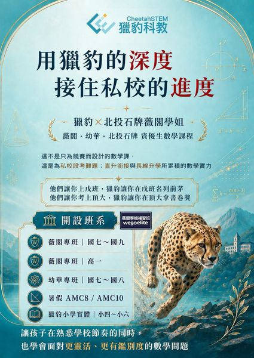

【2026/07 獵豹小學數學】3~6年級 P系列（上學期）課程開跑了！
獵豹資優數學P系列，3~6年級上學期課程。在AI年代，不把孩子的黃金歲月花在不能活用的知識與海量刷題；PK班偏重研究／演繹／發展，PI班聚焦熱門數學競賽與私中入學，啟發式教學激發孩子對數學的熱情。
小學數學PP系列PK班PI班
閱讀全文依年級、課程方向與目標快速查看所有課程與延伸內容。
獵豹資優數學P系列，3~6年級上學期課程。在AI年代，不把孩子的黃金歲月花在不能活用的知識與海量刷題；PK班偏重研究／演繹／發展，PI班聚焦熱門數學競賽與私中入學，啟發式教學激發孩子對數學的熱情。
■ FB本文按讚留言並加入獵豹客服官方Line： ID：@492bjsgw，或者掃描QR code(見底下留言) ■ 新生需要試上請按讚留言「試上+1」並加入獵豹官方line姓名學校年級，以及…
獵豹國中課綱資優數學J系列，JA班偏重科學班／數資班備考與輕競賽，JS班聚焦明星國中段考精華題、頂尖私中段考難題與會考。以課綱為基礎超越課綱，為錄取明星高中與科學班入學考奠定穩固基礎，並順利銜接高中S系列課程。
獵豹FA00八大頂尖名師聯手，51堂錄播＋2次線上模考，超過145小時菁英數學培訓。2026新版新增科學班複試題型與AMC/AIME深水區解析。
去年許多好手參與獵豹「科學班前瞻訓練營」模考，他們平時練習了許多考古題，在補習班的模考也表現良好，但對於獵豹的數學新題型卻不太適應,普遍得分偏低。
美國影響最大 、最權威的中學生數學競賽是由MAA （美國數學協會）舉辦的AMC（美國數學競賽系列 ，其中AMC部分可分為AMC8、10、12三種 （數字為報名者年級上限 ） 。

在私校學習數學，家長最常關心的第一件事，往往是：課程進度能不能跟學校接得上？ 薇閣、幼華等私校，數學進度快、章節順序不同、段考節奏緊，孩子如果沒有熟悉學校安排，很容易在平時小考、段考與直升銜接…
•首創以AI概念輔助教學 • 【 獵豹AMC課程】以科學方法、分析能力與思維模式來建構學習（歸納、演繹、對稱性、極端化⋯⋯），有別於一般的數學教學以知識點來架構學習（多項式、三角函數、向量…）。
獵豹小學資優網路課程 推出以來 培育了台灣許多頂尖精英，不但獲得許多高素質家長支持，也獲得同業專家的肯定‼️ 2026年起 獵豹將陸續推出更多更完整的數理資優課程（資優進度,AI演算法思維,電…
『決定孩子未來能力的關鍵學習 動態數學與AI的聯用』; GGB2朱安強老師:11/26(三) 晚上7:00~8:00說明會 『用幾何變換破解面積謎題 』)